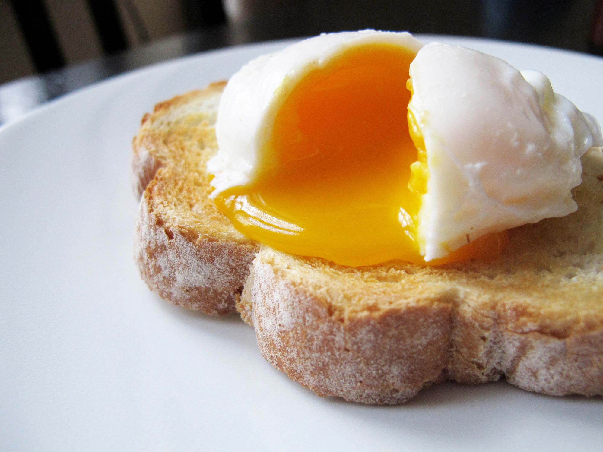

Home
Foolproof Poached Eggs

This is a simple, foolproof poached egg recipe - no fancy whirlpools or praying to the egg gods! These eggs may not look immacutely picture-perfect but with practice they hold together very well and still taste perfect!
It can take a little practice to find your rhythm, but once you do, it can be done in 15 mins or less! :)
Ingredients
This recipe assumes your eggs have been stored in the fridge. If you store your eggs at room temperature they will simply cook more quickly, so you'll need to experiment with cooking times until you find the sweet spot.
These ingredients are the bare minimum, but you can add any garnishes etc that you like.
Serves 1 person
- 2 free-range eggs (jumbo or extra-large)
- 2 tbsp white vinegar (or other mild-flavoured vinegar if you don't have white vinegar)
- 2 slices good quality bread
- butter (or equivalent spread), for toast
- salt and pepper
Steps
- Fill a medium saucepan 2-3 inches high with water. Bring to the boil and add the vinegar and reduce the heat to a simmer.
- Break 1 egg as close as possible to the surface of the water, easing it into the water on one side of the pan. Try to do this in a smooth motion so the egg stays together. Quickly do the same with the other egg on the other side of the pan.
- Once the eggs have settled after a few seconds, reduce the heat to a gentle simmer, so bubbles are breaking the surface but the water is not 'churning' up. The eggs may still look a bit messy but resist the urge to prod them or disturb the water! The bubbling motion helps bring them together.
- Set a 3 minute timer. Exact time will vary but start with 3 minutes for 2 eggs and tweak until your desired 'doneness' is reached.
- Put your bread in the toaster as soon as you start the timer.
- While you wait, prepare a plate covered with paper towel (to absorb excess water)
- Once the timer is finished turn off the heat immediately and use a slotted spoon to remove the eggs and place them on the paper towel-lined plate. It's important to do this as soon as possible as the eggs will keep on cooking while they're in the water.
- Butter your toast when ready, pop your eggs on top and garnish with salt and pepper
- Eat and enjoy straight away!
- Congratulate yourself for saving a bunch of money on cafe trips